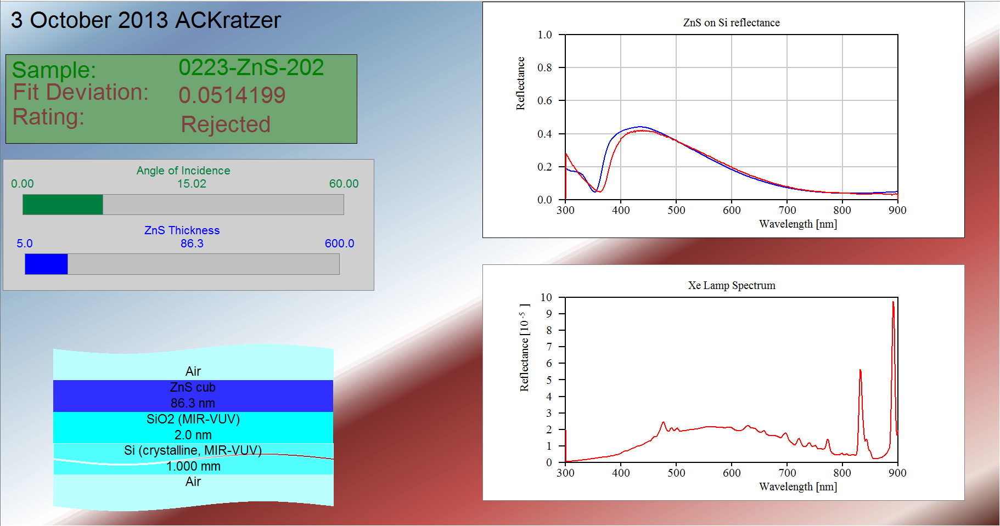

Past Experience
During my undergraduate study in physics, I mainly focused on modeling software and experimental techniques for determining properties of thin films. I mainly worked with Zinc Sulfide (ZnS) on Silicon waifers being produced by members of my research team, which is well studied, and thus a good tool for comparing different analysis tools. I compared two techniques: Reflection Spectroscopy (RS) and Spectroscopic Ellipsometry (SE).
After my bachelor's thesis in physics was complete, I took a Summer to learn more about cities taking action on climate change. While volunteering at Our Children's Trust, I did some research into the Climate Action Plans (CAPs) that major cities across the United States were creating. Some citities (like New York City and Chicago) had been working on CAPs for years and had very solid schedules for updating and evaluating, and some plans were just getting started. Across the board, however, no plans that I encountered published a noticible economic impact analysis. After seeing so many plans, and so many policies come to realization, I began to think more about how to evaluate impacts and effectiveness...